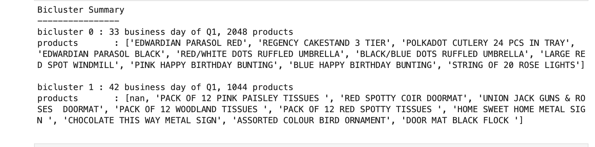

Algorithm Description
Clustering is a common data analysis technique applied to understanding the data associated with a problem. In a clustering solution, the same attributes are associated with every row of the dataset. In other words, each row is expressed or explained by all the attributes (columns). In contrast, a biclustering solution expresses associations between a subset of the rows and a subset of the columns.
Examples
Biclustering usually finds application with high dimensional datasets such as those found in:
-
Customer profiles, such as those found in Customer 360 use cases. Such profiles capture taste signatures that represent the interaction of the customer with the organization or business. For example, a retail apparel business may keep track of the customer’s interest in each quarter or season of the year,
-
Gene Expression Data occurring in bio-informatics settings,
Algorithm Input Data Description
A typical dataset associated with a biclustering task represents an interaction between entities. Interaction between two entities is the most common scenario. The two entities could be:
-
A customer and the store inventory in a retail store customer 360 use case. The interaction between these two entities would be the amount of money a customer has spent on an inventory item. The inventory items would constitute the columns of the data matrix, and the customers to the store would represent the rows.
-
A document and the vocabulary of a text corpus in a text mining application. The rows represent documents and the columns represent the words in the vocabulary. If a vocabulary word occurs in a document, then the interaction has an entry (for example a count of the number of times the word occurs in the document)
-
A patient and a gene expression level in a bio-informatics use case. The rows represent a patient and the columns represent the expression level of a gene in that patient’s medical test.
Algorithm Solution Description
The repository contains a retail dataset from the UCI machine learning repository. This dataset represents sales transaction logs from an online retail store. The sales at the store for the first quarter of 2010 are computed from this data. A row in the computed dataset is the day of the quarter, columns represent the amounts of inventory items sold that day. A biclustering of this dataset yields the first quarter sales summary for that year. A bicluster represents the days of the first quarter and the associated group of inventory item sales on those days. In the example provided, two biclusters were used. So we have two groupings of business days. Each grouping is characterized by sales activity for a subset of inventory items. See the figure below for an illustration.

In other words, the biclusters can be viewed as a Q1 shopping activity summary. As with the task recipe, the implementation for the example follows the template discussed in the overview section. For the details of the algorithm and its relationship with tasks such as Singular Value Decomposition (SVD) and Principal Components Analysis (PCA), see this video
Related Algorithms
Algorithms that factorize the data matrix, like PCA and SVD, are related to this algorithm. The factorization associated with this technique is different from methods such as SVD and PCA. Clustering algorithms are related to this algorithm.
If your use case needs to characterize user taste, user behavior, or user activity over a time period, this algorithm may be a good candidate to evaluate. If you are looking to solve such problems, do get in touch .